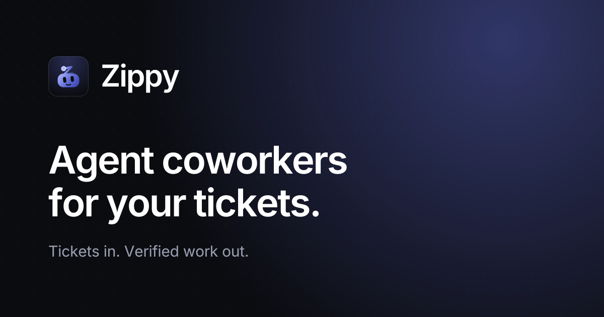

Zippy
Agent coworkers for your tickets. Calm, precise, fast. Quiet indigo on deep ink; one gradient, used only on the mark.
Logo
Clear space = half the mark's height. Min size 16px (favicon). Mark = friendly agent head whose antenna is a tilted comet-Z that grows out of the head: energy, speed, a coworker. No tile for favicon and in-app use; app icon = same mark on the ink tile. Mono glyph in logo-mono.svg uses currentColor.
Color
Mark gradient: #7C86E8 → #4650C0, 135°. Status colors stay in-app (success #4CB782, warn #F2C94C, danger #E5484D).
Typography
Inter Variable. Display 600–650, tracking −0.035em. Body 400–450, tracking −0.01em. Mono (handles, branches, diffs): Geist Mono / ui-monospace.
Social / OG

1200×630. Tagline: Agent coworkers for your tickets. Sub: Tickets in. Verified work out.